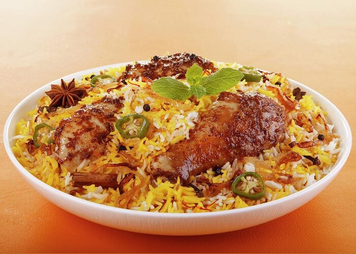
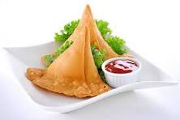
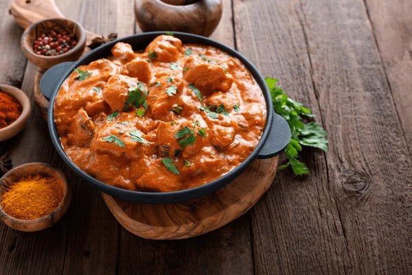

-

Chicken Briyani
Chicken Biryani is a classic Indian dish made with fragrant basmati rice, tender chicken, and a blend of aromatic spices and served with sauce.
-

Samosa
Samosa is a popular Indian snack known for its crispy pastry shell filled with savory ingredients such as spiced potatoes, peas, and sometimes minced meat.
-
Panner Tikka
Paneer Tikka is a flavorful Indian appetizer made with cubes of paneer (Indian cottage cheese) marinated in a mixture of yogurt and spices spiced with some sauce.
-

Butter Chicken
Butter Chicken, also known as Murgh Makhani, is a popular Indian dish featuring tender chicken pieces marinated in a creamy and mildly spiced.
-
Gulab Jamun
Gulab Jamun is a beloved Indian dessert made from deep-fried dough balls, typically made from khoya (reduced milk solids) or milk powder, soaked in a fragrant.
-
Masala Chai
Masala Chai is a traditional Indian beverage made from black tea infused with a blend of aromatic spices such as cardamom, cinnamon, cloves, ginger, and black .
.jpg)

.jpg)